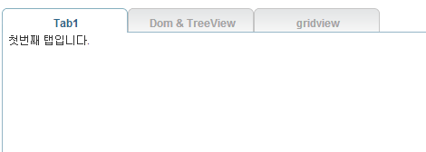
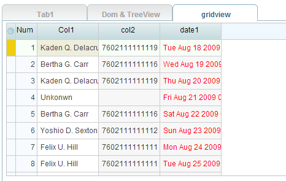

Rui.ui.tab.LTabView는 하나의 페이지에서 여러 개의 탭으로 구성된 내용을 보여주는 컴포넌트입니다.
이번에는 탭뷰를 사용하는 방법에 대해 알아보겠습니다.
탭뷰는 보통 여러 개의 탭으로 구성되어 있는데 각 탭은 레이블과 콘텐츠 영역으로 구분됩니다.
레이블은 탭의 헤더 타이틀을 표시하고 콘텐츠 영역은 각 탭의 내용을 구성하는 부분으로 이루어집니다.
콘텐츠영역은 보통 HTML Element로 구성합니다. 사용하는 방법은 다음과 같습니다.
<script type="text/javascript">
Rui.onReady(function(){
var tabView = new Rui.ui.tab.LTabView({
contentHeight: 300, // 콘텐츠영역의 전체 높이 값
tabs: [ // 탭뷰를 구성할 탭들을 정의
{ // 첫번째 탭
label: 'Tab1', // 탭의 제목
content: '첫번째 탭입니다.', // 탭 선택시 선택할 내용
active: true // 탭 생성시 현재의 탭을 선택된 탭으로 설정
},
{ // 두번째 탭
id: 'div-content-test', // 콘텐츠 내용을 별도 DOM Element로 설정
label: 'Dom & TreeView'
},
{
label: 'gridview',
content: '' // 콘텐츠 내용을 별도 DOM Element로 직접 설정
}
]
});
tabView.render('tab-container'); // 탭뷰를 생성할 위치를 설정
});
</script>
<body>
<div id="tab-container"></div>
<div id="div-content-test">test용 텍스트 입니다.
<div id="treeDiv1"></div>
</body>
실행결과

위 실행결과에서는 첫번째 탭만이 활성화 되어 '첫번째 탭입니다'라는 항목이 표시되고 있습니다.
그러나 일반적으로 화면 로딩 성능을 고려할 때는 나머지 두번째, 세번째탭의 내용은 탭이 선택되었을 때 탭안의 내용을 생성하도록 하는 로직이 필요합니다.
탭뷰에서는 activeTabChange 이벤트를 수신하여 해당 탭이 선택되었을 때 최초 한 번만 해당 탭안의 내용를 생성하도록
제어할 수 있습니다. 이렇게 하나의 페이지에 여러 탭뷰 또는 탭 등으로 구성되었을 때 개발자는 성능을 고려하여 주의깊게 화면을 구성해야 합니다.
다음으로 이러한 사용 예를 살펴보겠습니다.
탭뷰에서는 사용자가 탭을 선택했을 경우 activeTabChange라는 이벤트를 수신하여
현재 선택된 탭이 전에 한번 선택되었는지 혹은 최초 선택인지 판단하는 isFirst 속성 값이 있습니다.
isFirst 속성값은 기본값이 false이며 탭을 한 번 선택한 이후에는 내부적으로 true로 변경 되어 값이 고정됩니다.
그후에는 계속 true 상태로 되어 탭이 처음으로 눌려졌는지 판단하게 됩니다.
그래서 아래와 같이 조건을 넣어 판단하면 탭 레이블 선택시 탭의 컨텐츠 영역 로딩을 중복 실행하지 않게 합니다.
<script type="text/javascript">
Rui.onReady(function(){
// 탭뷰 선언부 생략
tabView.render('tab-container'); // 탭뷰를 생성할 위치를 설정
tabView.on('activeTabChange', function(e){
if(!e.isFirst)return;
switch(e.activeIndex){ // 선택된 탭 인덱스 정보입니다.
case 0: // default
Rui.log('index is 0');
break;
case 1: // tree를 생성하는 부분
dataSetTree.load({ url: './../../../../sample/data/menu.json' });
var tree = new Rui.ui.tree.LTreeView({
width: 200,
height: 250,
dataSet: dataSetTree
});
tree.render('treeDiv1');
break;
case 2: // Grid를 생성하는 부분
var columnModel = new Rui.ui.grid.LColumnModel({
columns: [
new Rui.ui.grid.LStateColumn(),
new Rui.ui.grid.LNumberColumn(),
{ field: 'col1', label: 'Col1', editor: new Rui.ui.form.LTextBox() },
{ field: 'col2', sortable: false, align: 'center' },
{ field: 'col3', align: 'right', hidden: true },
{ field: 'date1' , align: 'center', renderer: function(v){
return '' + v + '';
}}
]
});
var grid = new Rui.ui.grid.LGridPanel({
columnModel: columnModel,
dataSet: dataSet,
autoWidth: true,
height: 250
});
dataSet.load({ url: './../../../../sample/data/data.json' });
grid.render('defaultGrid');
break;
}
});
</script>
<body>
<div id="tab-container"></div>
<div id="div-content-test">test용 텍스트 입니다.
<div id="treeDiv1"></div>
</body>
실행결과 - 실행후 gridview 탭을 눌렀을 경우

위 로직대로 수행하면 최초 첫 번째 탭이 실행되고 나머지 탭들은 실행되지 않은 상태에서 사용자가 탭을 선택했을 경우에 각 탭이 처음 선택 되었을 때만 한 번 실행됩니다.